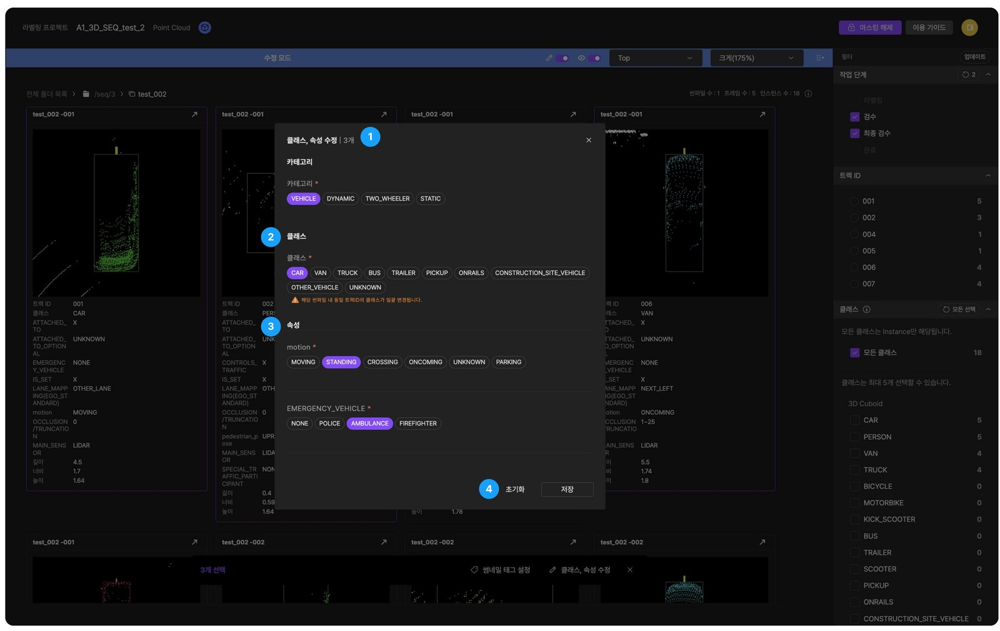

Product Manager · UX 리서치 5년 · AI 플랫폼 PO 2.5년
사용자에게서 문제를 찾고,
그 답을 제품으로 푸는 사람
UX 컨설턴트로 5년간 사용자를 관찰해 문제를 정의했고, AI 플랫폼 PO로 2.5년간 그 문제들을 제품 안에서 직접 풀고 개선해 왔습니다. AIMMO에서는 AI 학습 데이터 라벨링 플랫폼 STUDIO의 전략과 로드맵 수립부터 기획·개발·출시, 실제 사용 이후의 개선까지 제품의 전 주기를 주도했고, 최근에는 기업 AI 전환 제안과 기업 AI 교육에서 사람과 AI가 일을 나누는 방식을 직접 적용하고 있습니다.
AI 학습 데이터 플랫폼 STUDIO 총괄 · 8명+ TF 리딩 · 글로벌 고객사 수주 기여 · LG AI연구원 온프레미스 납품사례 →
장기 해외 체류
SK 그룹웨어 모바일 개편 기획, CJ ENM 히트맵 분석 단독 수행
여행 큐레이션 앱 기획·UI 설계
AIMMO · Product Owner · 2022.11 ~ 2025.05
AI 학습 데이터 라벨링 플랫폼
STUDIO
자율주행·OCR 같은 AI 모델이 학습할 데이터를 사람이 만들고 검수하는 플랫폼입니다. 제품 전략과 로드맵부터 출시 이후 운영까지 맡았고, 기획·디자인·개발·QA 8명 이상의 TF를 이끌었습니다.
고객사 BMW · Bosch · Continental · Magna · Arbe · 현대자동차 · 카카오모빌리티 · 스트라드비전 · LG AI연구원 · 네이버

AIMMO · 사례 01
6단계였던 검수 과정을
3단계로 줄여 검수 효율 개선
썸네일 뷰어 안에서 바로 수정하는 기능을 MVP로 먼저 출시해 검수자 전원이 사용했습니다. 작업 효율을 검증한 결과로 유관 팀 협업을 끌어내, 다른 작업 리소스 유형까지 확장했습니다.

기존 뷰어는 작업 결과물을 한 눈에 보는 단방향 도구였습니다. 검수 중 수정이 필요하면 뷰어를 벗어나 별도 경로로 요청을 전달해야 했고, 작업자는 다시 라벨링 작업 화면으로 돌아가 수정한 뒤 재제출해야 했습니다.
- 발견 — 작업 단가 효율을 높이기 위해 라벨링부터 재검수까지 전체 흐름을 살펴보다가, 검수와 수정 사이의 반복 작업에서 비효율이 생기는 것을 발견했습니다.
- 판단 — 효과가 가장 클 것으로 본 방식을 MVP로 기획·개발해 실제 작업에 먼저 적용하고 테스트했습니다.
- 확장 — 테스트에서 확인한 효과를 근거로 유관 팀의 협업을 이끌어내, 전체 리소스 유형으로 확장했습니다.
- 건당 검수 시간 최소 10초 단축
- 검수자 100% 사용
AIMMO · 사례 03
사용자 조사 세션으로
지속적인 개선 시스템 만들기
작업자·검수자 효율을 높이기 위해 프로젝트 PM, 실제 작업자와 함께하는 주 1회 사용자 조사 세션을 직접 설계·진행해 약 1년간 운영했습니다. 세션에서 나온 병목을 다음 주 배포로 연결해, 실제 작업 효율을 높이는 기능을 계속 내보냈습니다.

라벨링 작업 단가를 낮추는 것은 에이모의 미션 중 하나였습니다. 기능을 애자일하게 계속 개선해야 했지만, 작업자는 익숙해진 방식 안에서 불편이나 비효율을 스스로 알아차리기 어려웠고, 그걸 함께 찾아낼 기회와 환경도 부족했습니다.
- 프로젝트 PM과 실제 작업자를 매주 초대하는 세션을 직접 설계·진행 (주 1회 30분~1시간)
- 실제 작업의 니즈와 불편을 듣고, 해당 기능을 함께 써 보며 개선 방향을 매주 수집
- 수집한 내용을 PD와 바로 기능으로 설계해 다음 정기 배포에 반영하고, 효과를 보며 다시 업데이트
전체 작업 효율을 높일 개선 포인트를 세션에서 도출해 실제 배포까지 연결했습니다. 현대자동차 프로젝트 개선 10건(2024.03 ~ 07)은 모두 세션에서 나왔고, 요청부터 배포까지 평균 약 2주가 걸렸습니다.
- 포인트클라우드 세그멘테이션 — 라벨링 누락 포인트를 바로 찾도록 시인성 개선, 인스턴스 숨김·z값 필터링·올가미 선택으로 작업 범위를 빠르게 지정
- 이미지 세그멘테이션 — 픽셀 누락을 검수 전에 자동 검출, 최대 확대 단축키·엣지 표시 개선으로 객체 핏 확인
- 큐보이드·폴리라인 — 플랫큐보이드 확장면 시작점 조정, 폴리라인 첫째 선 표시
- 썸네일 뷰어 — 인스턴스 크기(넓이·너비·높이)를 뷰어에서 바로 확인
참고: 주 1회 세션 약 1년 · 매주 1회 정기 배포 무결손 · 2024년 개선·서포트 106건 (BMW 35, 현대자동차 10, Arbe 8 등)
웹 초안 · 도입부 + AIMMO 사례 01·03 (나머지 사례 링크는 아직 연결 전)